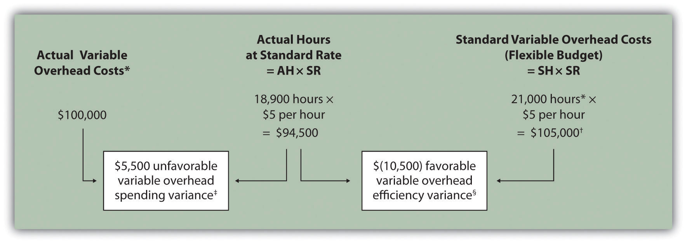
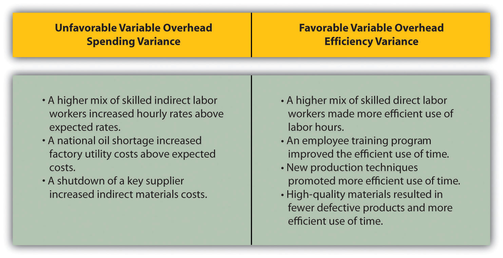

Question: Similar to direct materials and direct labor variances, variable manufacturing overhead variance analysis involves two separate variances. What are the two variances used to analyze the difference between actual variable overhead costs and standard variable overhead costs?
Answer: The two variances used to analyze this difference are the spending variance and efficiency variance. The variable overhead spending varianceThe difference between actual costs for variable overhead and budgeted costs based on the standards. is the difference between actual costs for variable overhead and budgeted costs based on the standards. For a company that allocates variable manufacturing overhead to products based on direct labor hours, the variable overhead efficiency varianceThe difference between the actual activity level in the allocation base (often direct labor hours or machine hours) and the budgeted activity level in the allocation base according to the standards. is the difference between the number of direct labor hours actually worked and what should have been worked based on the standards.
At Jerry’s Ice Cream, the actual data for the year are as follows:
| Sales volume | 210,000 units |
| Direct labor hours worked | 18,900 hours |
| Total cost of variable overhead | $100,000 |
Recall from Figure 10.1 "Standard Costs at Jerry’s Ice Cream" that the variable overhead standard rate for Jerry’s is $5 per direct labor hour and the standard direct labor hours is 0.10 per unit. Figure 10.8 "Variable Manufacturing Overhead Variance Analysis for Jerry’s Ice Cream" shows how to calculate the variable overhead spending and efficiency variances given the actual results and standards information. Review this figure carefully before moving on to the next section where these calculations are explained in detail.
Figure 10.8 Variable Manufacturing Overhead Variance Analysis for Jerry’s Ice Cream
Note: AH = Actual hours of direct labor. (This measure will depend on the allocation base that the company uses. Jerry’s uses direct labor hours to allocate variable manufacturing overhead, so AH refers to actual direct labor hours.) SR = Standard variable manufacturing overhead rate per direct labor hour. SH = Standard hours of direct labor for actual level of activity.
*Since variable overhead is not purchased per direct labor hour, the actual rate (AR) is not used in this calculation. Simply use the total cost of variable manufacturing overhead instead.
**Standard hours of 21,000 = Standard of 0.10 hours per unit × 210,000 actual units produced and sold.
† $105,000 standard variable overhead costs matches the flexible budget presented in Figure 10.2 "Flexible Budget for Variable Production Costs at Jerry’s Ice Cream".
‡ $5,500 unfavorable variable overhead spending variance = $100,000 – $94,500. Variance is unfavorable because the actual variable overhead costs are higher than the expected costs given actual hours of 18,900.
§ $(10,500) favorable variable overhead efficiency variance = $94,500 – $105,000. Variance is favorable because the actual hours of 18,900 are lower than the expected (budgeted) hours of 21,000.
Question: How is the variable overhead spending variance calculated?
Answer: As shown in Figure 10.8 "Variable Manufacturing Overhead Variance Analysis for Jerry’s Ice Cream", the variable overhead spending variance is the difference between what is actually paid for variable overhead and what should have been paid according to the standards:
As with direct materials and direct labor variances, all positive variances are unfavorable, and all negative variances are favorable. Note that there is no alternative calculation for the variable overhead spending variance because variable overhead costs are not purchased per direct labor hour. Thus actual rate (AR) is not used for this variance.
This variance is unfavorable for Jerry’s Ice Cream because actual costs of $100,000 are higher than expected costs of $94,500.
Question: How is the variable overhead efficiency variance calculated?
Answer: As shown in Figure 10.8 "Variable Manufacturing Overhead Variance Analysis for Jerry’s Ice Cream", the variable overhead efficiency variance is the difference between the actual hours worked at the standard rate and the standard hours at the standard rate:
The 21,000 standard hours are the hours allowed given actual production (= 0.10 standard hours allowed per unit × 210,000 units produced). Since actual direct labor hours worked total 18,900, the variable manufacturing overhead costs should be lower than initially anticipated at 21,000 standard hours. (This assumes variable overhead costs are truly driven by direct labor hours!) This results in a favorable variable overhead efficiency variance.
Alternative Calculation. Since we are holding the standard rate constant and evaluating the difference between actual hours worked and standard hours, the variable overhead efficiency variance calculation can be simplified as follows:
Note that both approaches—the variable overhead efficiency variance calculation and the alternative calculation—yield the same result.
The variable overhead efficiency variance calculation presented previously shows that 18,900 in actual hours worked is lower than the 21,000 budgeted hours. Again, this variance is favorable because working fewer hours than expected should result in lower variable manufacturing overhead costs.
Question: The managerial accountant at Jerry’s Ice Cream is interested in finding the cause of the unfavorable variable overhead spending variance of $5,500. The spending variance can result from variances in the cost of variable overhead items and the usage of these items. What might have caused the $5,500 unfavorable variable overhead spending variance?
Answer: The left panel of Figure 10.9 "Possible Causes of Variable Manufacturing Overhead Variances for Jerry’s Ice Cream" contains some possible explanations for Jerry’s unfavorable overhead spending variance.
Figure 10.9 Possible Causes of Variable Manufacturing Overhead Variances for Jerry’s Ice Cream

Question: Jerry’s Ice Cream might also choose to investigate the $10,500 favorable variable overhead efficiency variance. What might have caused the $10,500 favorable variable overhead efficiency variance?
Answer: The focus here is on the activity base used to allocate overhead. Since Jerry’s uses direct labor hours as the activity base, the possible explanations for this variance are linked to efficiencies or inefficiencies in the use of direct labor. The right panel of Figure 10.9 "Possible Causes of Variable Manufacturing Overhead Variances for Jerry’s Ice Cream" contains some possible explanations for this variance.
Again, this analysis is appropriate assuming direct labor hours truly drives the use of variable overhead activities. That is, we assume that an increase in direct labor hours will increase variable overhead costs and that a decrease in direct labor hours will decrease variable overhead costs.
Hiding Fraud in Overhead Accounts
The controller of a small, closely held manufacturing company embezzled close to $1,000,000 over a 3-year period. With annual revenues of $30,000,000 and less than 100 employees, the company certainly felt the impact of losing $1,000,000.
The forensic accountant who investigated the fraud identified several suspicious transactions, all of which were charged to the manufacturing overhead account. To prevent this type of fraud in the future, the forensic accountant recommended that “significant manufacturing overhead variances be analyzed both within and across time periods to identify anomalies.” Apparently, the company was not closely monitoring manufacturing overhead variances when the fraud occurred.
Source: John B. MacArthur, Bobby E. Waldrup, and Gary R. Fane, “Caution: Fraud Overhead,” Strategic Finance, October 2004, 28–32.
Carol’s Cookies expected to use 0.20 direct labor hours to produce 1 unit (batch) of product, and the variable overhead rate is $3.50 per hour. Actual results are in for last year, which indicates 390,000 batches of cookies were produced and sold. The company’s direct labor workforce worked 97,500 hours, and variable overhead costs totaled $360,000.
Solution to Review Problem 10.5
As shown in the following, the variable overhead spending variance is $18,750 unfavorable, and the variable overhead efficiency variance is $68,250 unfavorable.
AH = Actual hours of direct labor. SR = Standard variable manufacturing overhead rate per direct labor hour. SH = Standard hours of direct labor for actual level of activity.
*Since variable overhead is not purchased per direct labor hour, the actual rate (AR) is not used in this calculation. Simply use the total cost of variable manufacturing overhead instead.
**Standard hours of 78,000 = Standard of 0.20 hours per unit × 390,000 actual units produced and sold.
† $273,000 standard variable overhead costs match the flexible budget presented in Note 10.18 "Review Problem 10.2", part 2.
‡ $18,750 unfavorable variable overhead spending variance = $360,000 – $341,250. Variance is unfavorable because the actual variable overhead costs are higher than the expected costs given actual hours of 97,500.
§ $68,250 unfavorable variable overhead efficiency variance = $341,250 – $273,000. Variance is unfavorable because the actual hours of 97,500 are higher than the expected (budgeted) hours of 78,000.
Possible causes of unfavorable variable overhead spending variance are
Possible causes of unfavorable variable overhead efficiency variance are